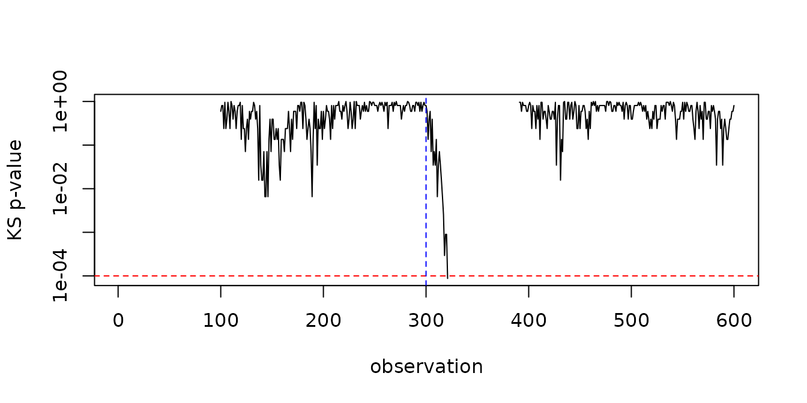

The defaults of every detector were calibrated so that false alarms are rare on the bundled data. Real streams differ, so this vignette shows how to read what a detector monitors, how to choose its threshold for your own data, and how the window policy changes what it compares.
Reading the drifter output
Besides the drift decision, every detector exposes the statistic it
monitors. After fit(), drifter_output holds
one row per observation; rows are NA while the detector has
nothing to report, for example while its window fills.
set.seed(1)
stream <- c(rnorm(300), rnorm(300, mean = 1.5))
model <- fit(dfr_kswin(window_size = 100, stat_size = 30, seed = 1), stream)
head(model$drifter_output[95:105, ])
#> D p
#> 95 NA NA
#> 96 NA NA
#> 97 NA NA
#> 98 NA NA
#> 99 NA NA
#> 100 0.2 0.5940706KSWIN reports the Kolmogorov-Smirnov statistic D and its
p-value p. Plotting the p-value on a log scale shows where
the two halves of the window stop looking alike:
plot(model$drifter_output$p, log = "y", type = "l", xlab = "observation", ylab = "KS p-value")
abline(h = model$state$alpha, col = "red", lty = 2)
abline(v = 300, col = "blue", lty = 2)
The column names of each detector are listed in the README.
stealthy() exposes the output of its drifter in the same
way, with one row per row of the data it received.
Calibrating a threshold
A threshold trades false alarms for detection delay. A practical way to choose it is to run the detector, with a threshold it can never reach, on data you consider stable, and look at the largest value its statistic reaches. A threshold above that value keeps false alarms rare on similar data.
set.seed(2)
stable <- data.frame(a = rnorm(1500))
no_alarm <- fit(dfr_kldist(threshold = 1e6), stable)
null_max <- max(no_alarm$drifter_output$divergence, na.rm = TRUE)
null_max
#> [1] 0.06922555Then check that the change you want to catch exceeds it:
shifted <- data.frame(a = c(rnorm(300), rnorm(300, mean = 2)))
peak <- fit(dfr_kldist(threshold = 1e6), shifted)$drifter_output$divergence
max(peak[301:400], na.rm = TRUE)
#> [1] 0.1815358When the statistic of the change you care about does not rise clearly
above the stable maximum, the detector cannot separate it from noise
with that window: use a larger window_size (or a different
detector) rather than a lower threshold. The default
threshold = 0.12 of dfr_kldist() was chosen
exactly this way, for the default 100-row window.
For hypothesis-test detectors (dfr_kswin(),
dfr_lbdd(), dfr_mcdd()), the threshold is the
significance level alpha. Since they test at every
observation, alpha must be much smaller than the usual
0.05; the defaults are between 1e-3 and
1e-4.
Sliding and anchored windows
The window-based detectors (dfr_kswin(),
dfr_lbdd(), dfr_mcdd(),
dfr_kldist() and dfr_aedd()) compare an older
reference half of their window with a recent half.
window_type decides which data the reference holds:
-
"sliding"(the default) keeps the lastwindow_sizeobservations, so the reference moves with the stream. It detects changes relative to the recent past, and its memory is bounded. -
"anchored"keeps every observation, so the reference half stays pinned to the beginning of the stream. It detects changes relative to the start, and its memory grows with the stream.
set.seed(3)
gradual <- seq(0, 3, length.out = 1000) + rnorm(1000, sd = 0.5)
sliding <- fit(dfr_mcdd(window_size = 100, alpha = 1e-4), gradual)
anchored <- fit(dfr_mcdd(window_size = 100, alpha = 1e-4, window_type = "anchored"), gradual)
c(sliding = sliding$drifted, anchored = anchored$drifted)
#> sliding anchored
#> FALSE TRUEOn this slow trend, consecutive halves of a sliding window are too similar to reject, while the anchored reference keeps the early level and eventually differs from the recent data. The price is memory: until a drift is reported, the anchored window keeps every observation.
Speed on long streams
The window-based detectors run their test at every evaluation, which
dominates their cost. monitoring_step sets how many
observations pass between two evaluations:
set.seed(4)
long_stream <- c(rnorm(3000), rnorm(1000, mean = 2))
system.time(every_step <- fit(dfr_lbdd(), long_stream))[["elapsed"]]
#> [1] 1.265
system.time(every_tenth <- fit(dfr_lbdd(monitoring_step = 10), long_stream))[["elapsed"]]
#> [1] 0.206The detection is delayed by at most monitoring_step
observations. On long streams, also bound the memory of
stealthy() with history_size and of
nrm_memory() with max_size.